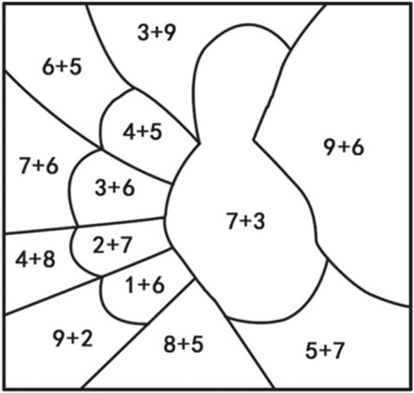
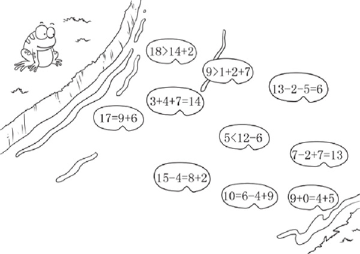
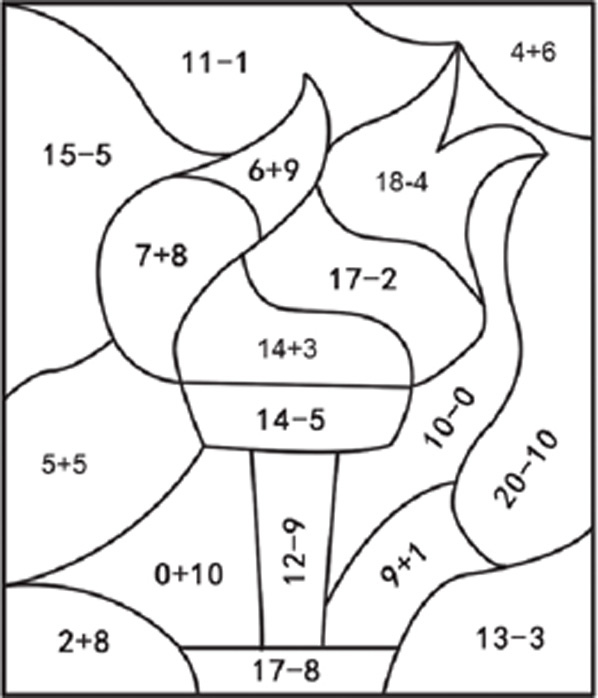
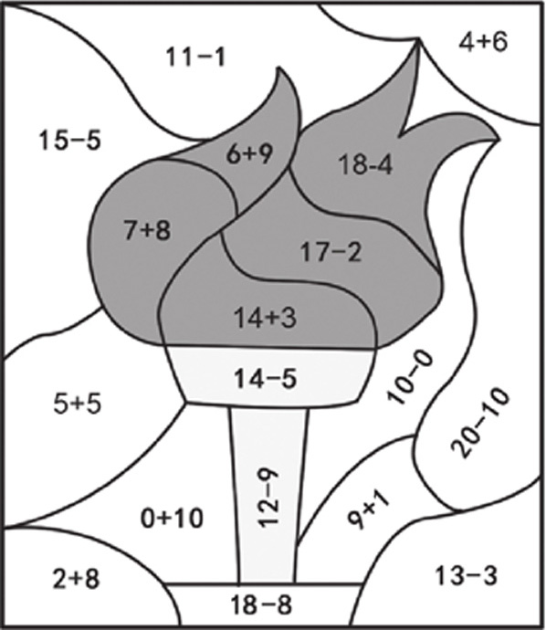
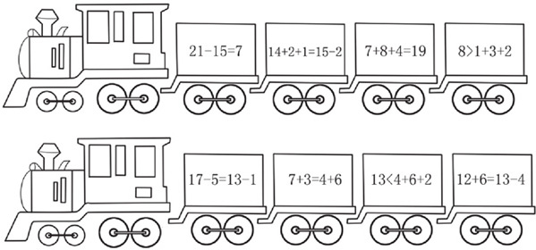
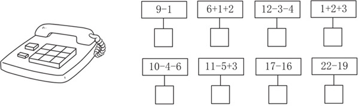
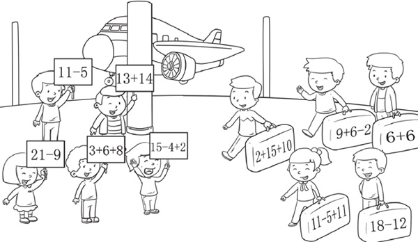
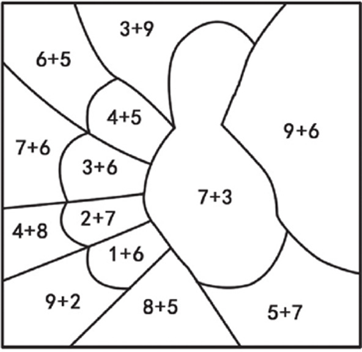

5～7岁的孩子已经掌握了10以内数的加减运算，连加、连减和混合运算，有些孩子已经会了20以内，甚至50以内的数的运算。运算是进行其他数学活动的基础，是小学数学最重要的内容。家长要用多种方式训练孩子的运算能力，从一开始以手指为运算基础的形象化的运算，过渡到抽象性的运算。

典型例题 1 青蛙只能从算式正确的荷叶上跳到河的对岸，你知道青蛙是怎么过去的吗？

把每个荷叶上的算式都计算一下，就能找到青蛙到河对岸的路线。图中正确的算式有18>14+2，3+4+7=14，5<12-6，13-2-5=6，9+0=4+5。
典型例题 2 把右图中算式得数大于10的部分涂成红色，小于10的部分涂成黄色，等于10的部分不涂色，看看能够得到什么图形。

按照一定顺序把图中的每个算式的结果计算出来，然后与10进行比较。比较完一个就涂上相应的颜色，最后的图如下所示。

1.两列火车上装着西瓜和哈密瓜，算式正确的车厢里装的是哈密瓜，算式错误的车厢里装的是西瓜，你知道哪几节车厢里装的是西瓜吗？

2.莫妮卡家的电话号码是8位的，你算出下面右图中算式的结果就能知道她家的电话号码。注意，电话号码是按从左到右的顺序排完第1行的数字，第2行的第1个数字接在第1行最后1个数字后面，第2行数字也按从左往右的顺序排列。

3.5个人到机场接朋友，他们要接自己手举牌上算式结果和行李箱上算式结果相等的提着行李箱的朋友，你能帮他们找出来吗？

4.把下图中算式得数小于10的部分涂成红色，等于10的部分涂成黄色，大于10的部分不涂色。
